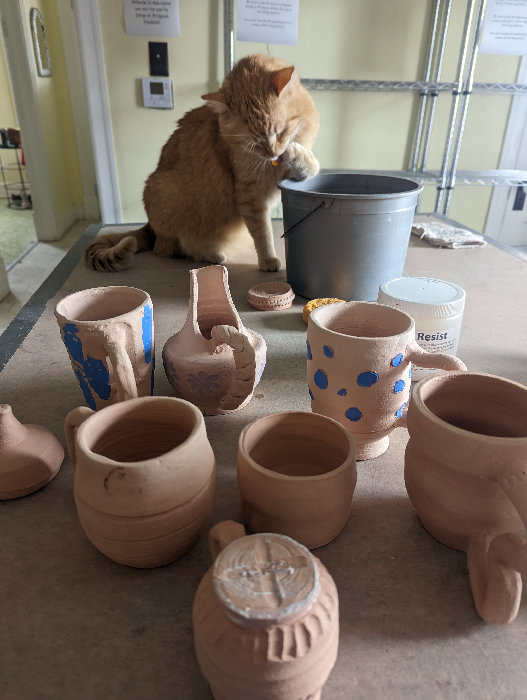

--Ceramics Gallery--
Check out some of the artists past projects in the gallery below, and check back for updates!

The first mug I ever created on the wheel.


This is an awesome little commissioned plant pot I made for a client based in Washington State.


A colorful polka dot stemless wine glass and a swirled tripod mug before glazing.


These are a few small pitchers I have made. The blue was made to be an espresso pitcher.


A handbuilt tripod mug stenciled using a maple leaf.



Some projects in various stages of the glazing process.


A few small dip bowls.


Morel mushroom garden statues, a custom charcuterie board, a blue handleless mug, and heart-shaped tea bag plates


Rust red ice cream bowl.